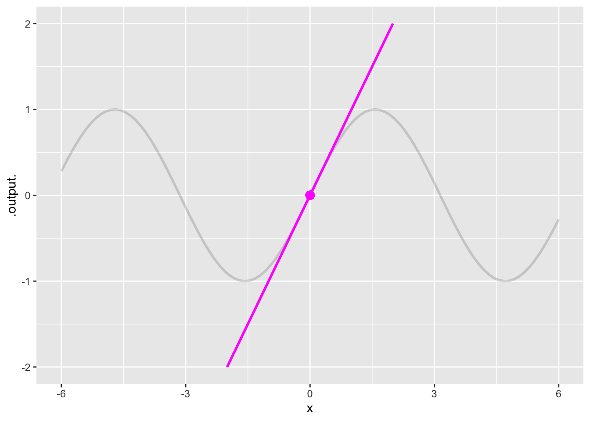

\(x_0=9\)
\(x_0=6\)
\(x_0=5\)
\(x_0=0\)
question id: csfj-1
\[ \newcommand{\dnorm}{\text{dnorm}} \newcommand{\pnorm}{\text{pnorm}} \newcommand{\recip}{\text{recip}} \]
Exercise 1 The Taylor polynomial \[T(x)\equiv-9-6(x-5)-9(x-5)^2\] is used to approximate the function \(f(x)\).
\(x_0=9\)
\(x_0=6\)
\(x_0=5\)
\(x_0=0\)
question id: csfj-1
\(\partial_{x} (x_0)\) is negative
\(\partial_{x} (x_0)\) is zero
\(\partial_{x} (x_0)\) is positive
It cannot be determined from the polynomial
question id: csfj-2
\(\partial_{xx} (x_0)\) is negative, but we cannot determine its magnitude
\(\partial_{xx} (x_0)=-9\)
\(\partial_{xx} (x_0)=-4.5\)
\(\partial_{xx} (x_0)=-18\)
question id: csfj-3
Exercise 2 Here’s the Taylor polynomial expansion of \(\sin(x)\) about a center \(x_0\): \[p(x) = 1/2 - \frac{\sqrt{3}/{2}}{2!} (x - x_0)^2 + \frac{1/2}{4!} (x - x_0)^4 + \cdots\] Which of the following is the numerical value of \(x_0\)? (Hint: Remember that the coefficients involve the function and its derivatives evaluated at \(x_0\) as described in [Faulty cross reference: high-order-approx].
question id: calf-tear-fridge-1
Exercise 3 Consider the function \(f(x) \equiv (x - 3)^2\).
Using ordinary algebra, \(f(x)\) can be expanded as \((x^2 - 6 x -9)\). Consider \[p(x) = -9 - 6 x + x^2 .\] Is \(p()\) a Taylor polynomial expansion of \(f(x)\)?
Yes, with a center at \(x_0 = 0\)
Yes, with a center at \(x_0 = 3\)
No, because there are no factorials involved
question id: QGSi6C
Exercise 4 At \(x=0\), the value of \(x \ln(x)\) is indeterminate, having the form \(0 \cdot \infty\).
Using Active R chunk 1, plot out \(x \ln(x)\) over the domain \(0 < x < \frac{1}{2}\).
question id: dolphin-mean-linen-1
Now to check the existence of \(\lim_{x\rightarrow 0} x \ln(x)\) using the traditional calculus techniques of l’Hopital’s Rule.
Recall that l’Hopital’s Rule covers situations like \(0 / 0\) or \(\infty / \infty\). But with \(\lim_{x\rightarrow 0} x \ln(x)\) we have a situation of \(0 \times \infty\). However, \[x \ln(x) = \frac{\ln(x)}{1/x}\] which makes it clearer that \(\lim_{x\rightarrow 0} x \ln(x)\) is a matter of comparing the two functions \(\ln(x)\) and \(1/x\). The limit \(x \rightarrow 0\) is of \(\ln(x)\) is \(-\infty\) while for \(1/x\) it is \(\infty\). Thus we have a indeterminate form problem of \(-\frac{\infty}{\infty}\). This can be handled by l’Hopital’s Rule.
Here, the rule has the form:
\[\lim_{x\rightarrow 0} \left[ \frac{\ln(x)}{1/x} \right] = \lim_{x\rightarrow 0} \left[\frac{\partial_x \ln(x)}{\partial_x 1/x}\right] \tag{1}\]
Compute the derivatives on the right-hand side of Math expression 1 and simplify the algebra.
question id: dolphin-mean-linen-2
Take the limit as \(x \rightarrow 0\) of the simplifed form. That will be the result from l’Hopital’s Rule.
question id: dolphin-mean-linen-3
Exercise 13 We are all busy people these days and nobody has the time to compute an infinite number of coefficients define a function using a Taylor series. Instead, we will have to use just a few coefficients. But how many is enough?
The function make_poly() defined in Active R chunk 2 can create a function given a fiducial point \(x_0\) and a few coefficients at the start of the Taylor polynomial.
For example, the coefficients for \(e^x\) (around \(x_0 = 0\)) are \(1, 1, 1/2, 1/6, 1/24, 1/120, 1/720, 1/5040, 1/40320, 1/362880, ...\) Factorials get big fast!
The sandbox shows a simple comparison of the polynomial approximation to the actual exponential function. it plots the magnitude of the error \(|e^x - p(x)|\) on a log-log scale.
Read the graph carefully to make sure you understand what is being displayed.
1e-6 is 0.000001. The approximation has that much error or less for \(|x| < 0.3\).For \(x \approx 2.0\), the magnitude of the error is, to judge from the graph, 1e-1. When written as a decimal number, how many leading zeros are after the decimal point?
question id: fawn-hear-kayak-1
For \(x \approx 10.0\), the magnitude of the error is, to judge from the graph, 1e4. What is this when written as a decimal number?
question id: fawn-hear-kayak-2
Exercise 5 In the next Blocks of the textbook, we will be using four of our basic modeling functions very heavily:
These functions are all very intricately related to one another. It will help to see the relationships if we write each of them in a common form. To that end, we will write each as a linear combination of power-law functions with integer exponents. Each of these linear series involves an infinite number of power-law functions.
exponential function\[e^x = 1 + \frac{x}{1} + \frac{x^2}{2!} + \frac{x^3}{3!} + \frac{x^4}{4!} + \frac{x^5}{5!} + \cdots\]
sine function \[\sin(x) = 0 + \frac{x}{1!} + 0 - \frac{x^3}{3!} + 0 + \frac{x^5}{5!} + \cdots\]
cosine function \[\cos(x) = 1 + 0 - \frac{x^2}{2!} + 0 + \frac{x^4}{4!} + 0 + \cdots\]
“natural” logarithm\[\ln(1+x) = 0 + \frac{x}{1} - \frac{x^2}{2} + \frac{x^3}{3} - \frac{x^4}{4} + \frac{x^5}{5} + \cdots\]
We ask you to memorize each of these four infinite series. Since it is impractical to memorize an ionfinite number of things, we will give you a system so that there are only a small number of facts needed.
Here are the patterns of the signs:
| function | x0 | x1 | x2 | x3 | x4 | x5 | x6 | \(\cdots\) |
|---|---|---|---|---|---|---|---|---|
| \(e^x\) | + | + | + | + | + | + | + | \(\cdots\) |
| \(\cos(x)\) | + | 0 | - | 0 | + | 0 | - | \(\cdots\) |
| \(\sin(x)\) | 0 | + | 0 | - | 0 | + | 0 | \(\cdots\) |
| \(\ln(1+x)\) | 0 | + | - | + | - | + | - | \(\cdots\) |
Notice that the signs of the \(\cos(x)\) function cycle with a period of 4, so the sign of term \(n+4\) equals the sign of term \(n\). Same with the \(\sin(x)\), but the signs are shifted one slot.
The series all extend to \(n\rightarrow\infty\). Consequently, it is not practical to use these polynomial expansions for exact calculations. Mathematicians call them transcendental functions.
\(e^x\)
\(\sin(x)\)
\(\cos(x)\)
\(\sin(x)\) and \(\cos(x)\)
\(\sin(x)\) and \(e^x\)
\(\cos(x)\) and \(\ln(x+1)\)
question id: fox-dig-room-1
\(e^x\)
\(\sin(x)\)
\(\cos(x)\)
\(\sin(x)\) and \(\cos(x)\)
\(\sin(x)\) and \(e^x\)
\(\cos(x)\) and \(e^x\)
question id: fox-dig-room-2
question id: fox-dig-room-3
question id: fox-dig-room-4
question id: fox-dig-room-5
question id: fox-dig-room-6
Exercise 6 Here is a Taylor polynomial: \[p(x) = e + \frac{e}{1!} (x-1) + \frac{e}{2!} (x-1)^2 + \cdots\]
question id: pig-iron-closet-1
No, a polynomial does not have functions like \(e\).
Yes. The center is \(x_0 = 1\).
Not really. The formula suggests that the center is \(x_0=1\) but the coefficients are wrong. [ hint: The coefficients are right. ]pig-iron-closet
question id: pig-iron-closet-2
Exercise 7 With very high-order derivatives, it can be awkward to use a notation with repeated subscripts, like \(\partial_{xxxxx} f(x)\). Another notation often encountered is \(f^{(5)}\), where the integer in the superscript tells the order of the derivative. We will use that notation in this problem.
For a function \(f(x)\) and its derivatives \(f^{(1)}(x)\), \(f^{(2)}(x)\), … the Taylor polynomial \(p(x)\) centered on \(x_0\) is
\[p(x) \equiv f(x_0) + \frac{f^{(1)}(x_0)}{1!} (x - x_0)^1 + \frac{f^{(2)}(x_0)}{2!} (x - x_0)^2 + \cdots\]
A Taylor polynomial, like all polynomials, is a linear combination of basic functions.
Which of these are the basic functions being linearly combined in a Taylor polynomial?
\(f(x), f^{(1)}(x), f^{(2)}(x), \ldots\)
\(f(x_0), f^{(1)}(x_0), f^{(2)}(x_0), \ldots\)
\(f(x_0), \frac{f^{(1)}(x_0)}{1!}, \frac{f^{(2)}(x_0)}{2!}, \ldots\)
\((x-x_0), (x - x_0)^2, \ldots\)
question id: frog-throw-screen-1
Exercise 8 Recall the formula for the coefficients \(a_n\) to approximate a function \(f(x)\):
\[a_n = \frac{f^{(n)}(x_0)}{n!}\] where \(f^{(n)}\) means the “nth derivative. For simplicity, we will look at examples where \(x_0 = 0\), so that the polynomial itself will be
\[p(x) = a_0 x^0 + a_1 x^1 + a_2 x^2 + a_3 x^3 + \cdots\] Of course, \(x^0\) equals 1.
Let’s construct the polynomial coefficients for the function \(f(x) = e^x\) around \(x_0 = 1\). Start with the sequence of derivatives \(f^{(n)}(0)\).
0, 0, 0, 0, 0, …
1, 1, 1, 1, 1, …
1, 2, 3, 4, 5, …
0, 1, 2, 3, 4, …
question id: bc1-1
0, 0, 0, 0, 0, …
1, 2, 3, 4, 5, …
0, 1, 2, 3, 4, …
1, 1, 2, 6, 24, …
question id: bc1-2
\(1 + x + \frac{x^2}{2} + \frac{x^3}{6} + \frac{x^4}{24} + \cdots\)
\(1 + x + \frac{x^2}{2} + \frac{x^3}{3} + \frac{x^4}{4} + \cdots\)
\(1 + x + \frac{x^2}{2!} + \frac{x^3}{3!} + \frac{x^4}{4!} + \cdots\)
question id: bc1-3
Now let’s construct the polynomial expansion of \(\sin(x)\) using the same technique: Find the sequence of derivatives \(f^{(n)}\), then divide each of them by \(n!\) to construct the \(a_n\) coefficients.
0, 1, -1, 1, -1, …
1, 0, -1, 0, 1, …
0, 1, 0, -1, 0, …
1, 0, 0, -1, 1, …
question id: bc1-4
\(1 + x + \frac{x^2}{2} + \frac{x^3}{6} + \frac{x^4}{24} + \cdots\)
\(x - \frac{x^3}{3} - \frac{x^5}{5} + \cdots\)
\(x - \frac{x^3}{6} - \frac{x^5}{120} + \cdots\)
\(1 + x - \frac{x^3}{6} - \frac{x^5}{24} + \cdots\)
question id: bc1-5
\(1 - \frac{x^2}{2} + \frac{x^3}{6} - \frac{x^4}{24} + \cdots\)
\(1 - \frac{x^2}{2} - \frac{x^4}{4} + \cdots\)
\(1 - \frac{x^2}{6} + \frac{x^4}{24} - \cdots\)
\(1 - \frac{x^2}{2} + \frac{x^4}{120} + \cdots\)
question id: bc1-6
Finally, let’s construct the polynomial expansion of the function \(f(x) \equiv \frac{1}{1-x}\) at \(x_0 = 0\).
1, 1, 1, 1, 1 …
1, -1, 1, -1, 1, …
0, 1, 0, 1, 0, …
1, 0, 1, 0, 1, …
question id: bc1-7
1, 1, 1, 1, 1, …
1, 1/2, 1/6, 1/24, 1/120, …
1, 1, 1/2, 1/6, 1/24, …
1, 1, 2!, 3!, 4!
question id: bc1-8
Exercise 9 Consider the function \[f(x)\equiv \sin(x-\frac{\pi}{6})\] and its 3rd order Taylor polynomial approximation, \(T(x)\). Both are implemented in ?lst-seahorse-pay-plant, which you should run before continuing.
In this exercise, we want to figure out the extent of the interval in which \(T(x)\) is within \(0.05\) of \(f(x)\). We can do this by plotting \(T(x)\) and also the two functions \(f(x)+0.05\) and \(f(x)-0.05\).
Find the full interval of the domain of \(x\) for which \(f(x) - 0.05 < T(x) < f(x) + 0.05\). (Hint: you may need to modify the plotting commands in Active R chunk 4.)
\(x\in(-1.1,1,1)\)
\(x\in(-1.1,1.5)\)
\(x\in(-1.5,1.1)\)
\(x\in(-1.5,1.5)\)
question id: seahorse-pay-plant
Exercise 12
Need to integrate this with the Chapter 27 text.
The polynomial computer does not have any problem with overflow or underflow. The key to success is to write the Taylor polynomial for functions such as \(\sin(x)\) or \(x\) or \(x^2\) near \(x_0 = 0\). Such polynomials will always look like:
\[f(x) = a_1 x^1 + a_2 x^2 + a_3 x^3 + \cdots\]
What’s special here is that the a_0 term does not need to be included in the polynomial, since \(f(0) = 0\).
sin()
tan()
atan()
acos()
question id: rhinosaurus-toss-gloves-4
These zero divided by zero problems (like \(\sin(x) / x\)) always involve a ratio of two functions (\(\sin(x)\) and \(x\) here) that don’t need the \(a_0\) term in their Taylor series around \(x_0 = 0\). That makes them just a little bit simpler.
What’s more important than simpler is that, for the expansion of such functions to study the limit at \(x \rightarrow 0\), we only need the first term with a non-zero coefficient \(a_k\) to represent the function with complete accuracy.
Why? Consider the 2nd-order Taylor polynomial \(a_1 x + a_2 x^2\). If we are to be able to safely disregard the \(a_2\) term it is because that term, for small \(x\) is much, much smaller than the \(a_1 x\) term. And we can always choose non-zero \(x\) to make this so.
For instance, suppose our polynomial were \(x + 100 x^2\). For \(x=0.1\), the first and second terms are the same size; we need them both for accuracy. For \(x=0.01\), the second term is 1/100 the size of the first term, maybe we don’t need the second term so much. You can always make \(x\) so small that anyone will be satisfied that the second term is utterly negligible compared to the first.
Here’s the method:
Suppose you have a function \(f(x) \equiv u(x)/v(x)\) where \[\lim_{x\rightarrow 0} u(x) = 0\ \ \ \text{and}\ \ \ \lim_{x\rightarrow 0} v(x) = 0\] Given this, \(f(0)\) is not defined. But we can ask whether there is a sensible value that can be plugged in in place of \(f(0)\) that will cause the modified \(f()\) to be continuous at \(x=0\).
Step 1: Write the Taylor polynomial expansion around \(x-0 = 0\) for both \(u(x)\) and \(v(x)\). If both expansions have a non-zero first coefficient, you can stop there. Now we have:
\[u(x) \approx a_1 x\] \[v(x) \approx b_1 x\] where \(a_1 = \partial_x u(0)\) and \(b_1 = \partial_x v(0)\).
Step 2: Divide the polynomial (really just linear!) expansion of \(u()\) by the expansion of \(v()\) to get
\[\lim_{x\rightarrow 0}\frac{u(x)}{v(x)} = \lim_{x\rightarrow 0} \frac{a_1 x}{b_1 x} = \frac{a_1}{b_1}\]
that is the answer, \(a_1/b_1\), at least when \(b_1 \neq 0\). We will come back to that case later.
\(a_1 = 1\) and \(b_1 = 1\)
\(a_1 = \pi\) and \(b_1 = \pi\)
\(a_1 = -1\) and \(b_1 = -1\)
\(a_1 = 0\) and \(b_1 = -1\)
question id: rhinosaurus-toss-gloves-5
Sometimes the singularity is at some non-zero \(x\). For instance, \[h(x) \equiv \frac{x^2 - 16}{x - 4}\] The divide-by-zero comes into play when \(x=4\). So is there a sensible value to plug in for \(h(4)\) to replace the singularity.
Here, write your Taylor polynomials around \(x_0 = 4\), the location of the singularity. We will get:
\[x^2 - 16 = a_1 (x-4) + a_2 (x-4)^2 + \cdots\] \[x - 4 = b_1 (x-4)\] Using Taylor’s formula for coefficients we will get \[a_1 = \partial_x (x^2 - 16)\left.\right|_{x=4} = 2x\left.\right|_{x=4} = 8\] \[b_1 = \partial_x (x - 4) = 1\]
Consequently, \(\lim_{x\rightarrow 4} \frac{x^2 - 16}{x - 4} = 8\)
We’ve been discussing ratios of functions where the ratio cannot be calculated at the singularity using simply the limits of the functions approaching that singularity. (For instance \(\lim_{x\rightarrow 0} \sin(x) = 0\) and \(\lim_{x\rightarrow 0} x = 0\), but knowing this does not tell us what \(\lim_{x\rightarrow 0} \frac{\sin(x)}{x}\) will be. These are called “indeterminate forms.” As you’ve seen, if we know more about the functions than merely their individual limits, we can sometimes resolve the indeterminacy. Here we are doing that by writing each function as a low-order polynomial.
The indeterminate form \(\lim_{x\rightarrow 0} \frac{\sin(x)}{x}\) might be said to have the “shape” 0/0. But 0/0 is just a notation about the limits of the two individual functions. There are indeterminate forms with other shapes: \[\frac{0}{0}\ \ \ \ \ \ \frac{\infty}{\infty}\ \ \ \ \ \ 0\cdot {\infty\ \ \ \ \ 0^0\ \ \ \ \ \ \infty^0\ \ \ \ \ \ 1^\infty\ \ \ \ \ \ \infty - \infty}\] Keep in mind that something like \(0 \infty\) is not a multiplication problem but rather shorthand for \(u(x) v(x)\) where \(\lim_{x\rightarrow x_0} u(x) = 0\) and \(\lim_{x\rightarrow x_0} v(x) \rightarrow \infty\).
There is a variety of algebraic tricks to try to transform these different shapes of indeterminate forms into a ratio of functions, each of which goes to zero at the relevant \(x_0\). Once that is done, you can apply the method described above.
Indeterminate forms have been a bonanza for the author of calculus book exercises, who can write an large number of examples, many of which have never been seen in the wild.
One shortcut that works in practice is to make a graph of the indeterminate form near the singularity. If the limit as \(x\) approaches the singularity is a finite number, you can read off the result from the graph.
In Active R chunk 5, the function \(g(x)\equiv x \ln(x)\) is set up. This function has a singularity at \(x=0\). Examine the plot and determine where the function value is going as you walk along the graph to the singularity.
Exercise 10 In this exercise, you’re going to approximate a sinusoid \(sin(x)\) with polynomials of order 3, 5, and 7. The approximation should go exactly through the coordinate pair \((x_0=0, y=0)\) shown as a bright dot on the graph. Notice that the approximation is exacty tangent to the sinusoid at \(x_0 = 0\): the approximating line goes straight through the dot and continues pretty much through the center of the thick line marking the sinusoid, until the sinusoid curves away from the straight line.
Warning: All aesthetics have length 1, but the data has 101 rows.
ℹ Please consider using `annotate()` or provide this layer with data containing
a single row.
Draw your own graph of a sinusoid so that you can sketch on top of it the polynomial approximations you will design.
Start with sketching in a third-order polynomial that approximates the sinusoid near \(x_0=0\). The general formula for a third order polynomial is \[\text{third}(x) \equiv \overbrace{\underbrace{b_0 + b_1 x^1}_\text{first-order polynomial} + b_2 x^2}^\text{second-order polynomial} + b_3 x^3\] To turn the first-order approximation into a third-order approximation algebraically, you would need to choose the coefficients \(b_2\) and \(b_3\). You want to choose the best possible \(b_2\) and \(b_3\) to stay close to the sinusoid. Of course, you could take the lazy person’s approach and choose \(b_2 = b_3 = 0\). If you did that, you would have the first-order polynomial. Here’s the important point: the best third-order polynomial will not be any worse than the first-order polynomial, but it can be better!
Remember what you know about the shape of third-order polynomials:
Repeat (1), sketching out a 5th-order polynomial. Again, one tail will go up and the other down. But now there can be two argmaxes and two argmins that alternate along the \(x\) axis: min, max, min, max.
One more time, sketching now a 7th-order polynomial. Just like the first-, third-, and fifth-order polynomial, for the 7th one tail will go up and the other down. There can be as many as three argmaxes and three argmins. They will alternate: between any two argmaxes, there will be one argmin.
Exercise 11 We would like to write a Taylor-series polynomial for \(\dnorm(x)\). To do this, we will need the folling numbers \[\dnorm(x_0),\ \ \partial_x \dnorm(x_0),\ \ \partial_{xx} \dnorm(x_0),\ \ \partial_{xxx} \dnorm(x_0), ...\]
Because partial derivatives are numbers.
Because the notation \(x_0\) is used to refer to a number, not the name of an input.
It was a mistake.
question id: birch-dig-radio-1
Here are the functions for the derivatives
| Order | formula for derivative |
|---|---|
| 0th | \(\dnorm(x)\) |
| 1st | \(\left({\large\strut}-x\right)\dnorm(x)\) |
| 2nd | \(\left({\large\strut}x^2 - 1\right)\dnorm(x)\) |
| 3rd | \(\left({\large\strut}3x - x^3\right)\dnorm(x)\) |
| 4th | \(\left({\large\strut}3\,x^2-x^4 \right)\dnorm(x)\) |
| 5th | \(\left({\large\strut}3-6\,x^3 + x^5 \right)\dnorm(x)\) |
| 6th | \(\left({\large\strut}-15\,x^2 + 10\,x^4-x^6 \right)\dnorm(x)\) |
| 7th | \(\left({\large\strut}-15 + 45\,x^3-15\,x^5 + x^7 \right)\dnorm(x)\) |
| 8th | \(\left({\large\strut}105\,x^2-105\,x^4 + 21\,x^6-x^8 \right)\dnorm(x)\) |
You will need to add in the 6th, 7th, and 8th terms.
Plot T_at_0(x) ~ x over the domain \(0 \leq x \leq 2\), and pipe the result to a slice-plot of dnorm(x) ~ x so that you can compare the two plots.
Define another function T_at_1() which will be much like T_at_zero() but with x0=1 and the coefficients changed to be the formulas evaluated at \(x=1\).
Add a layer showing T_at_1() to your previous plot.
Say over what domain T_at_0() is a good approximation to dnorm() and over what domain T_at_1() is a good approximation to dnorm(). Do the two domains overlap?
T() as defined in Active R chunk 7:Plot T() out on top of dnorm() to show whether T() is a good approximation to dnorm().
You could continue on to define T_at_2() and incorporate that into the piecewise T(), and so on, to construct an approximation to dnorm() that is accurate over a larger domain.